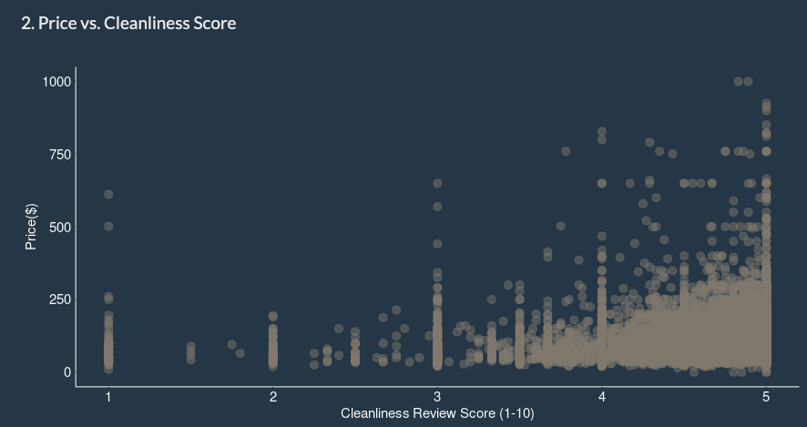
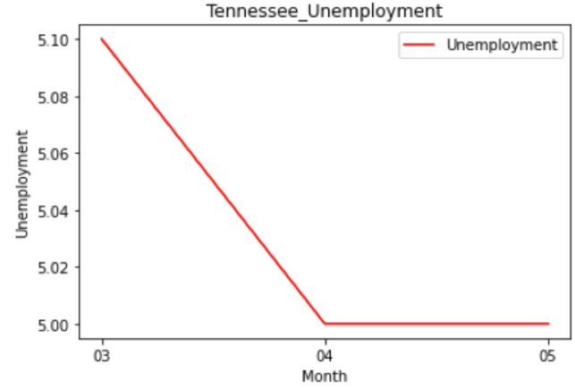
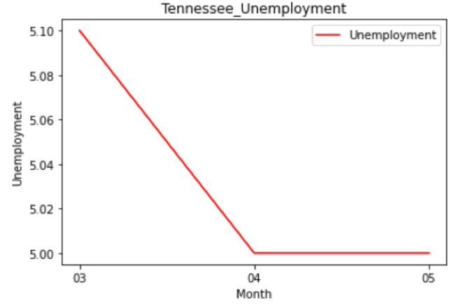

NEW YORK CITY AIRBNB GUEST GUIDE.
Guests can obtain housing and location information by entering simple inputs into our app and clicking one button.
Online app GithubDescription
It may be a daunting task for travelers to target the most ideal places to stay via Airbnb, as Airbnb’s site provides so many listing options. It is time consuming for the guests to scan through miscellaneous listings and collect fragmented information from the Airbnb website. We identified the vital elements that guests will consider—listing locations, price, number of people that a location can accommodate, and amenities— and then leveraged appropriate visualization approaches to display the relationships between these elements to provide comprehensive information to guests. Furthermore, we conducted a price prediction to provide an additional decision-making reference for guests.
App feature
In this app, our user can cutomize their preference.

Based on the input from our customers, we will provide match options for our customers. And will give the listing detail when the user click on the dot.

If our client hasn’t decided which block or where to live, we also provide neighborhood recommendations according to our user’s preference.
Our recommendations is based on:- Budget
- Location feature
- Listing quality
we have the average price of each district.
screen shot:

we collect all critical keywords previous customers mentioned in the reviews for each neighborhood.
screen shot:


e.g., cleanliness score, location score
screen shot:

REFERENCE
Airbnb Data Source: Inside Airbnb
Shiny app Code Reference: Github (Author:gl2668)
Map by Price Code Reference: RPubs-NYC Maps (Author: Jake Hofman)
Dynamic Plot Code Reference: Github (Author:wch)
My Method on How to Select the Perfect Airbnb Accommodations
Airbnb Community Center
Project Scope
As the pandemic hits the global economy, we are looking at the unemployment rate and the distribution of vaccination rates to determine if vaccination is helping the economy recover.
First, we want to understand how the epidemic affects the unemployment rate. So, we look at the unemployment rate and the number of confirmed cases in early 2020 compared to late 2020. Then, we screened out the states with higher GDP to eliminate other factors that might affect economic development and then selected the five states affected by the epidemic from among the candidates for analysis.
 
Model Used
- pandas
- seaborn
- matplotlib
Conclusion
Our project focuses on the problem: does vaccine help the economy?
After graphing the line chart, It’s not clear to see the relationship between unemployment and vaccination rate.
We concluded that because the current vaccination data available on CDC only cover three months from March to May,
there is limited data to analyze and easily affected by the result of a single month.
Also, the unemployment rate was probably not affected immediately. And there might be some time delay to react.
So, a more extensive observation period would help us gain more evidence to verify the relationships.
Moreover, correlation does not imply causation.
We only take two variables this time; more parameters should be considered in further analysis.
REFERENCE
Project Scope
Currently, advertisers/posters manually label their posts as lost or found which is an additional step that takes time. In addition to this, it’s not required that advertisers/posters label their post as lost or found, so the current sort by functionality doesn’t encompass all the posts.
By having the ad be automatically labeled as lost or found, it helps the advertisers to save time and ensures all posts are accurately labeled. As users looking within this section are clearly visiting this site with the clear intention of either viewing the site in terms of “lost” or “found”, we identified this as a problem that we could solve. Not only would this greatly improve the advertising experience, but also would improve the user-experience as well. This subsection improvement is a win-win that benefits all parties once the improvement has been implemented.
Abstract
Data Analysis
Web Scrapping: Before starting the model construction, we scrapped around 1,000 Lost and Found postings from Craigslist, including 490 postings in the West Lafayette area and 595 postings in Los Angeles, to ensure that enough data acquired for the model training.
TFIDF Vectorizing: We tokenized and normalized them with the Lemmatize function, where we used a pre-defined database to lookup lemma and removed punctuations or filtered out all special characters. Then we did TD-IDF conversion to weight our terms. Since we would like to drop less important words to reduce the dimension, we set the minimum document frequency equal to 5, which removed all the words with frequency less than 5. In addition to this, we also wanted to keep order information, so we included bag of 2-grams in our argument.
Model Analysis: Our objective is to train a model to automatically label the post into “lost” or “found” category, so it will be a classification problem.
We tried Naïve Bayes, Decision Tree, Random Forest and SVM, four models to do the classification.
Model Performance:


Topic Model: we removed words like “found”, "missing", "lost" “contact", "please", "info", "show" and "home" as these are words related to our posting topics that we already know and don’t need to categorize.
In 3 topic models, we listed top 5 keyword and found that dog and cat appear across our models, meaning that they are the most possible focus in posts.
Top key word:

Image Recognition: Because we saw the words “dog” and “cat” consistently across our top topics, we realized this is due to people not categorizing on specific breeds or detail.
Therefore, if we can recognize the breed, color, or other characteristics, we can create the tags automatically.
This enables website users to investigate all the related posts easily and timely when looking for dogs or cats.
For example, we used image recognition on “dog” and “cat” from images to further identify the image.
Result of Image Recognition:

Conclusion
We wholeheartedly believe that this project and model improves user-experience and brings value both to the user and to Craigslist. We not only considered what best benefits the user and Craigslist respectively, but also researched and understood the user behavior to best optimize value within the “lost+found” page.
By increasing the amount of efficient and accurate posts, this then increasing the credibility, which could in turn increase the number of users. With an increased number of users, Craigslist will be able to have an increase in advertisers, which would increase the amount of revenue for Craigslist.
ERD we built for our client
Project Scope
The goal of the project is to simplify and clean the database to make queries easier throughout the business. Additionally, we hope to gain insight into cost and sales analysis in order to provide client with insight into their business through the newly implemented database.
Data Model & Design
Data Set:
- Inventory
- Sales
- Customers
- Cost
We aim to clean our client's database through the normalization of the databases to help with cost analysis for the company. Currently, the database has some missing data and rows with multiple data points.
We separated the contact numbers and addresses from the customer table to limit missing values and allow multiple addresses and phone numbers, moving from 1-Normal to 2-Normal Form.
Another issue that we ran into was translations of the document. We had to preprocess the data through google slides to utilize the google translate function.
Then we assign the tables primary keys, we altered the default data types for necessary columns and set limits for primary key variables. We then set the primary key constraints so that future additions to these tables will require these variables to be included.
Business Insight
- Inventory Cost Control:
- Sales Analysis:
- Customer Cost Analysis:
- Product Price Distribution:
We use SQL to list all the high inventory cost items in descending order of costs.

Analyzed the high sales days to discover any daily trends in the volume of sales for the company.

To understand high-cost suppliers, we joined the cost and customer tables to see which customers have the highest average costs for our client.
Help with assessing its relationships with suppliers.

Distributions of costs for each material for our client to understand its pricing ranges.

Project Scope

The data was collected by crawling the Amazon website and contains product metadata and review information about 548,552 different products (Books, music CDs, DVDs, and VHS videotapes).
This data includes all the detail of each product—for example, the product ID and the title. Also, the sales rank of each product, the category, the similar products, and the detailed list of reviews, including time frame rating and customer ID and the vote for helpful or not from other customers.
Machine Learning
- Average Rating Prediction by Sales Rank:
- Number of reviews and downloaded count to predict average rating:
We build five models to predict the average rating prediction by sales rank. Which is Logit, Naïve Bayes, SVM, Decision Tree and Random Forest. Among all the models, the SVM model performs the worst. And random forest has the best performance. However, the accuracy is only 36.57%. We supposed this happened because the value of sales rank is the less, the better, and the average rating is the opposite. Furthermore, the sales rank is across the four product categories and will probably cause an unstable prediction.
The performance of the average predict rating by the number of reviews and the downloaded count is very close. Most of these products are digital versions, so the download and the reviews numbers are very close.
Graphing and BFS
Through creating this data structure and employing BFS to find the number of separate “islands” of co-products, we found that roughly 40% of all products had no or very few co-products, and that 60% of the products were all connected to each other in a large island of co-products.
Optimization
We took the best sales rank of each group of group of product (book, music, etc.) and sought to minimize the sales rank while constraining the storage available for holding product. We found that the in case the company wants to increase sales for a specific product, it should create a promotion for it’s best selling video, and sell as much of that product as possible without focusing on the promotion of anything else.

Clustering - K means clustering
First, we made an initial guess of K. Then, create the clusters, which include the closest nodes in the distance to each centroid. Update the center.
Draw an elbow graph to determine the final cluster number with six.
Clustered our data by the downloaded count. As the result shows, even with the high download amount, the average rating is not decreasing; in contrast, within cluster 4, it has the highest average 4.7, which is also with the highest download amount—the download amount 4557, which somehow represents the popularity of a particular item.
And with the most popular thing also receive a lot of positive rating of it.